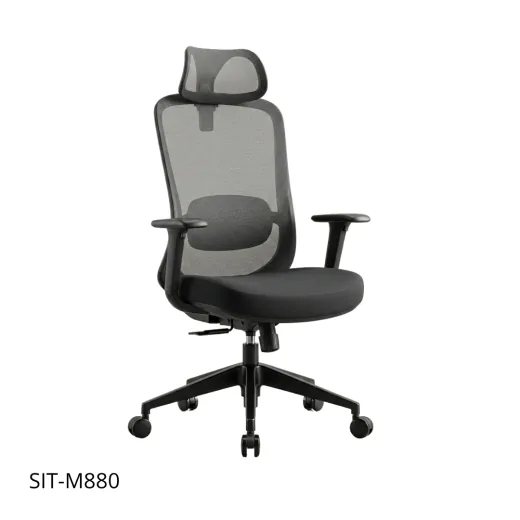
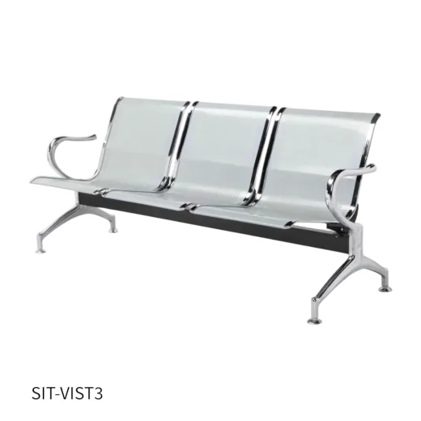

SIT · Modelo SIT9373HFABRIC
Silla SIT ejecutiva gris o negro, poliéster transpirable, nylon, clase 4 300 lb ajustable · SIT-9373H-FABRIC · SIT-9373H-PU Gris
L 6,277.85
En iOffice
Precio en cada tienda
| Tienda | Precio | Antes | Disponibilidad | |
|---|---|---|---|---|
| iOffice | L 6,277.85 | — | Disponible | Ver en tienda › |
Precios referenciales tomados de cada tienda el 28 de noviembre de 2026. El precio válido es el que muestra la tienda al comprar.
Historial de precio
Lo seguimos desde el 16 de noviembre. Precio más bajo registrado: L 6,277.85 en iOffice (16 de noviembre), igual que hoy. El precio no ha cambiado en ese tiempo.
Características
| Reposacabezas integrado | Sección superior del respaldo diferenciada y acolchada para el apoy |
|---|
Descripción
Esta silla ejecutiva proyecta una imagen de autoridad y profesionalismo absoluto. Su acabado en color negro con detalles cromados y costuras blancas en contraste la convierten en una pieza central sofisticada para cualquier oficina moderna que busque un estilo impecable y técnico.
Tapizado en material sintético negro: Superficie lisa de apariencia similar al cuero con secciones laterales microperforadas para un acabado detallado.
Costuras decorativas blancas: Detalles de costura en contraste que resaltan el contorno del respaldo, el asiento y los apoyabrazos.
Estructura cromada: Base de cinco radios y soportes de los apoyabrazos con acabado metálico brillante.
Acolchado de alta densidad: Diseño con volumen pronunciado en el respaldo y el asiento para un soporte visualmente robusto.
Otros sillas y escritorios SIT

Silla SIT ejecutiva 300 lb con respaldo alto negro, superficie de Nylon ajustable · SIT-M880L 5,775.3En iOffice Escritorio SIT tipo L base metálica, mesa auxiliar melamina nogal con medidas 160 W x 80 D x 75 H cm · SIT-D535WALL 7,164.5En iOffice
Escritorio SIT tipo L base metálica, mesa auxiliar melamina nogal con medidas 160 W x 80 D x 75 H cm · SIT-D535WALL 7,164.5En iOffice Silla SIT de 3 Asientos con Cojín para sala de Espera con brazo. Color Gris y Negro. SIT-VIST3CL 4,887.5En iOffice
Silla SIT de 3 Asientos con Cojín para sala de Espera con brazo. Color Gris y Negro. SIT-VIST3CL 4,887.5En iOffice Silla SIT ejecutiva de oficina 300 lb, en color negro o gris nylon, poliéster, transpirable, tela · SIT-8322H-BK · SIT-8322H-GR NegroL 4,871.4En iOffice
Silla SIT ejecutiva de oficina 300 lb, en color negro o gris nylon, poliéster, transpirable, tela · SIT-8322H-BK · SIT-8322H-GR NegroL 4,871.4En iOffice
Silla de espera SIT individual cromada con brazo, con 3 asientos. SIT-VIST3L 4,628.16En iOffice Silla SIT Ejecutiva, respaldo alto, ajustable, base cromada. Color Negro. Peso: 250Lbs. SIT-M315 Gris y azulL 4,252.09En iOffice
Silla SIT Ejecutiva, respaldo alto, ajustable, base cromada. Color Negro. Peso: 250Lbs. SIT-M315 Gris y azulL 4,252.09En iOffice Silla SIT ejecutiva con respaldo alto, mecanismo, reposabrazos, marrón piel sintética. SIT-M650L 4,083.68En iOffice
Silla SIT ejecutiva con respaldo alto, mecanismo, reposabrazos, marrón piel sintética. SIT-M650L 4,083.68En iOffice Silla SIT Ejecutiva de respaldo alto mecanismo base y Apoyabrazos cromados, Color marrón. Peso: 300Lbs. SIT-M700L 4,036.5En iOffice
Silla SIT Ejecutiva de respaldo alto mecanismo base y Apoyabrazos cromados, Color marrón. Peso: 300Lbs. SIT-M700L 4,036.5En iOffice